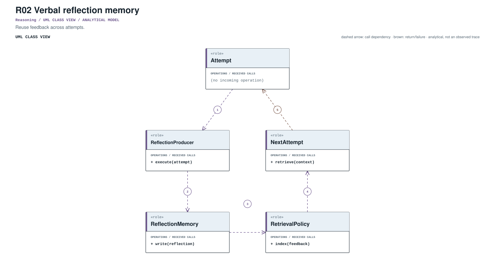
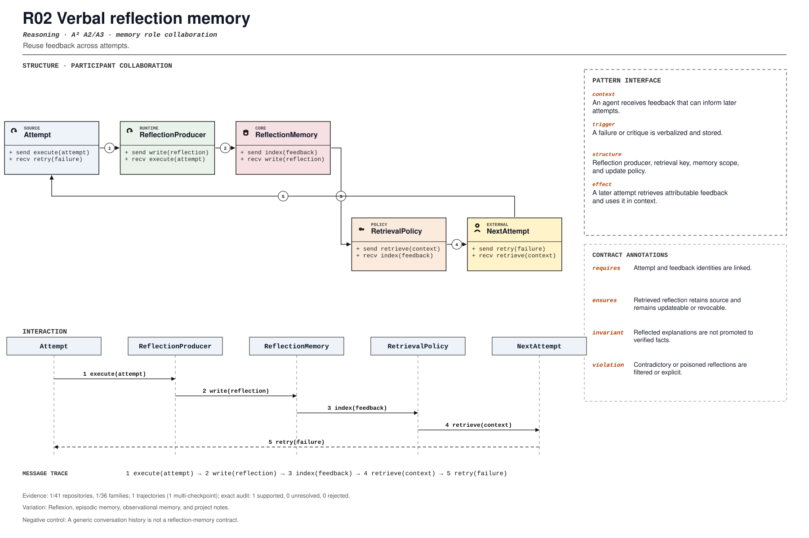

PROMPT SKETCH
Store verbal reflections with links to the attempt and feedback that produced them. Retrieve a reflection only with its source, and keep it updateable or revocable when later evidence changes.Reuse feedback across attempts.
feedback_reuse_across_attemptsRECORD STATUSCandidate · v0.1.0The proposed contract drawn as participant roles, received calls, and numbered dependencies.

The same roles and calls as a class collaboration and a numbered message sequence.

Where the mechanism applies. All four dimensions belong to the proposed match, not just its vocabulary.
The obligation that clients, operators, and auditors should be able to rely on.
A generic conversation history is not a reflection-memory contract.
The hot spot is admitted only where the protected semantics survive.
Reflexion, episodic memory, observational memory, and project notes.
Test reuse, stale memory, contradiction, poisoning, and deletion.
Did reflection memory gain provenance and maintenance policies?
An illustrative prompt and a small design sketch for the proposed contract. Names and APIs are invented; this is not a repository excerpt.
Store verbal reflections with links to the attempt and feedback that produced them. Retrieve a reflection only with its source, and keep it updateable or revocable when later evidence changes.def reflect(attempt, feedback, memory):
note = Reflection(
text=evaluator.explain(attempt, feedback),
attempt_id=attempt.id,
feedback_id=feedback.id,
scope=attempt.task.scope,
)
memory.put(note)
return note
def retrieve(task, memory):
return [note for note in memory.search(task) if note.scope == task.scope]Illustrative design sketch. A reflection without provenance becomes an unfalsifiable instruction. This example is a teaching aid, not implementation evidence or a conformance claim.
Up to five public files retrieved by the frozen cue and pinned to the audited commit. A match is a place to inspect, not a confirmed implementation.
Each layer answers a different question. Do not substitute retrieval for review.
A concrete source anchor is available for this proposed record. It is one exemplar, not evidence that all repositories—or every contract field—conform.
Review boundary: this candidate and its specification come from an AI-assisted study. Independent human validation remains open.
2.8% of repository families in the frozen panel have at least one current cue, historical cue, or canonical source layer. This is not confirmed prevalence.
Current lexical-cue repositories: 0 / 41899383db98e0packages/memory/src/processors/observational-memory/reflector-agent.ts:50packages/memory/src/processors/observational-memory/__tests__/observational-memory.test.ts:10564Reflector writes reusable verbal memories.
(?i)\b(?:Reflexion|verbal[_-]?reflection|reflection[_-]?memory|episodic[_-]?memory)\bThis expression is a discovery instrument only. A match is a retrieval cue—not a confirmed implementation, pointcut match, or contract proof.